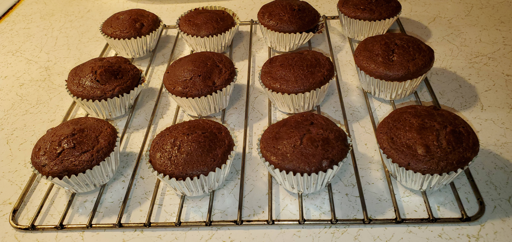

This is a recipe for "Chocolate Fudge Muffins"

Ingredients
- 1 cup of Pillsbury Best All-Purpose Flour
- 6 tbsp. of HERSHEY’S COCOA NATURAL UNSWEETENED POWDER
- 1.5 tsp. of CLABBER GIRL DOUBLE ACTING BAKING POWDER
- 0.25 tsp. of Arm & Hammer pure Baking Soda
- 0.5 tsp. of MORTON SEA SALT
- 0.75 cup of Food Lion Dark Chocolate Chunks (or Chips)
- 0.75 cup granulated sugar
- 4 tbsp. (1 HALF STICK) of LAND O LAKES UNSALTED BUTTER
- 1 large egg at room temperature (Remove the egg from the refrigerator about 1 hour before you need it.)
- 1 cup of buttermilk
- 1.5 tsp. of McCormick Vanilla Extract
Directions
- Sift together the all-purpose flour, cocoa powder, baking powder, baking soda, and salt into a bowl. Toss the chocolate chunks into the dry ingredients.
- In a separate bowl, whisk together the granulated sugar, melted butter, egg, buttermilk, and vanilla extract until well blended and consistent. (To melt the butter, use a microwave safe dish and heat it on high for about 30 seconds.)
- Add the wet ingredients to the dry ingredients and use a spatula to mix until the flour has just disappeared, but there are still lumps. Do Not overmix.
- Preheat the oven to 400° F. Line the muffin tin with the baking cups.
- Fill the baking cups nearly all the way.
- Place the muffin tin on the center rack and bake for 18 to 20 minutes until the interior of the muffin is 195° F. You can also touch the top center of a muffin with your fingertip, and you’ll know it’s done if the muffin springs back. Do not open the oven door too early or they may collapse or not rise properly.
- When done, remove the muffins from the oven. Remove the muffins from the muffin tin immediately to prevent them from continuing to cook and dry out. (A tablespoon works well for removing the muffins from the hot muffin tin.) Let them cool completely, then place them in an airtight container or bag with paper towels (top and bottom) at room temperature. This will keep them fresh for 3-4 days.
- Enjoy.
Download Recipe